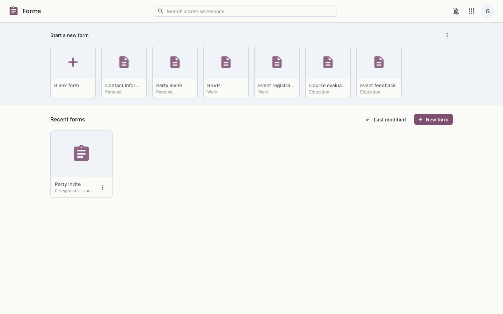

Build forms and surveys, collect responses, and see the results — with an optional quiz mode that grades itself.
Forms lets you build a form or survey from a stack of question types, share a link, and collect responses — then read them one by one or as a summary with charts. Add sections for multi-page forms, branch between them based on answers, or turn the whole thing into a self-grading quiz.

A form is an ordered list of questions grouped into sections; each submission stores its answers as structured data, with branching resolved as the respondent moves between pages. Choice answers roll up into summary charts, and in quiz mode answers are scored against the answer key on submission. Sharing a form gives respondents a link, while building and viewing results use the workspace single sign-on.